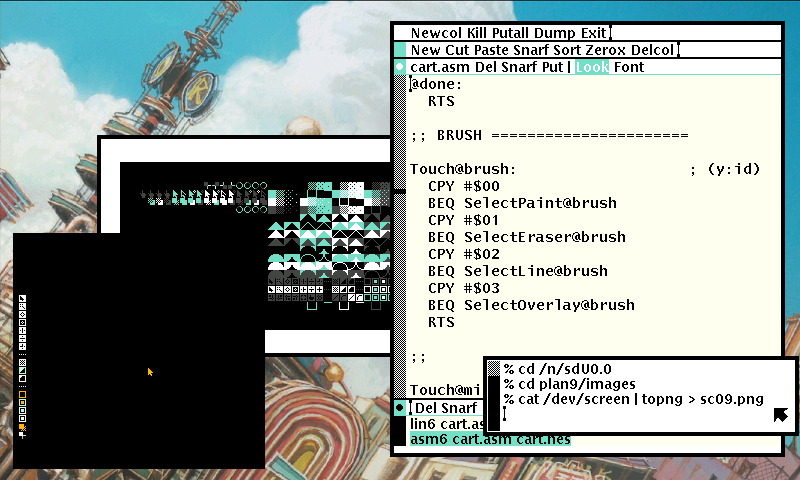
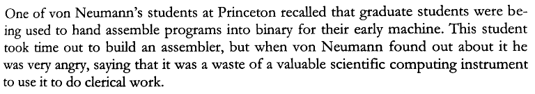

Assembly languages have a strong correspondence between the operands and the architecture.
Subleq is a One Instruction Set Computer(OISC) architecture.
The Subleq instruction subtracts the contents at address a from the contents at address b, stores the result at address b, and if the result is negative or zero, jumps to address in c. If the result is positive, execution proceeds to the next instruction.
if (mem[B] -= mem[A]) <= 0 goto C
Each Subleq instruction is stored in 3 cells, each cell holds a number. For example, to add two numbers, 3 and 4, stored in cells 0x9 and 0xa.
0 0 0 3 m[0] - m[0], m[0] = 0, jump to 3. 3 9 0 6 m[0] - m[9], m[0] = -3, jump to 6. 6 0 a 0 m[a] - m[0], m[a] = 7.. 9 3 4 0
Interpreter
Subleq programs can be encoded in Uxntal and evaluated. Here is an example program that adds to numbers and copies the result into a specific cell:
Jump(Q)
&0 -&0 -&0 -/Q &Q
Adding(x,y)
&0 -&0 -&0 -/1 &1 -&x -&0 -/2 &2 -&0 -&y -/Q &x 12 &y 34 &Q
Move(x,y)
&0 -&0 -&0 -/1 &1 -&y -&y -/2 &2 -&x -&0 -/3 &3 -&0 -&y -/4 &4 -&0 -&0 -/Q &a 12 &Q
BranchOnEqual(b,c)
&0 -&0 -&0 -/1 &1 -&b -&0 -/L1 &2 -&0 -&0 -/OUT &L1 -&0 -&0 -/4 &4 -&0 -&b -/c &OUT .. &b &c &Q
One of the most famous esolangs.
Brainfuck operates on an array of memory cells, each initially set to zero. A pointer is initially pointing to the first memory cell. All characters that are no operations should be ignored, and considered to be comments.
> | Move the pointer to the right |
< | Move the pointer to the left |
+ | Increment the memory cell at the pointer |
- | Decrement the memory cell at the pointer |
. | Output the character signified by the cell at the pointer |
, | Input a character and store it in the cell at the pointer |
[ | Jump past the matching ] if the cell at the pointer is 0 |
] | Jump back to the matching [ if the cell at the pointer is nonzero |
Interpreter
Memory should normally consist of 8 bit cells, and wrap on overflow and underflow. Negative memory addresses should NOT be assumed to exist, however, an interpreter may provide some. Memory should consist of at least 30000 cells, some existing brainfuck programs do need more so this should be configurable or unbounded.
Evaluation
Evaluation consists of moving along the memory an incrementing or decrementing the value stored in the 8-bit cells.
+++ Store 3 at 0 >> Move to 2 + Store 1 at 2
Loop
A simple loop is a matter of decrementing a counter in a cell:
+++++ Store 5 at 0 [-] Decrement
IO
The output operator emits the ASCII value at the cell.
++++++++
++++++++
++++++++
++++++++
++++++++
. Write 0x28, or '('
Compiler
Brainfuck was invented by Urban Müller in 1993, in an attempt to make a language for which he could write the smallest possible compiler for the Amiga OS, version 2.0. He managed to write a 240-byte compiler.
Here is a compiler from Brainfuck to Uxn bytecode, it will emit an hexadecimal string that can be copy-pasted back into the interpreter and evaluated natively:
CHIP-8 was created by RCA engineer Joe Weisbecker in 1977 for the COSMAC VIP microcomputer.
The Chip-8 language is capable of accessing up to 4KB(4096 bytes) of RAM, from location 0x000 to 0xFFF(0-4095). The first 512 bytes, from 0x000 to 0x1FF, are where the original interpreter was located, and should not be used by programs.
Registers
| Register | Size | Description |
|---|---|---|
| V[16] | byte | General purpose |
| I | short | General purpose |
| PC | short | Program counter |
| SP | byte | Stack pointer |
| DT | byte | Delay timer |
| ST | byte | Sound timer |
Keypad
The computers which originally used the Chip-8 Language had a 16-key hexadecimal keypad.
| 1 | 2 | 3 | C |
| 4 | 5 | 6 | D |
| 7 | 8 | 9 | E |
| A | 0 | B | F |
Screen
The original implementation of the Chip-8 language used a 64x32-pixel monochrome display. Programs may also refer to a group of sprites representing the hexadecimal digits 0 through F. These sprites are 5 bytes long, or 8x5 pixels. The data should be stored in the interpreter area of Chip-8 memory (0x000 to 0x1FF).
Instructions
CHIP-8 instructions are always 2 bytes long and arranged in big-endian order, that is with the most significant byte first. The original implementation of the Chip-8 language includes 36 different instructions, including math, graphics, and flow control functions.
All instructions are 2 bytes long and are stored most-significant-byte first. In memory, the first byte of each instruction should be located at an even addresses. If a program includes sprite data, it should be padded so any instructions following it will be properly situated in RAM.
- nnn or addr - A 12-bit value, the lowest 12 bits of the instruction
- n or nibble - A 4-bit value, the lowest 4 bits of the instruction
- x - A 4-bit value, the lower 4 bits of the high byte of the instruction
- y - A 4-bit value, the upper 4 bits of the low byte of the instruction
- kk or byte - An 8-bit value, the lowest 8 bits of the instruction
| Opcode | Type | C Pseudo | Explanation |
|---|---|---|---|
| 0NNN | Call | Calls machine code routine (RCA 1802 for COSMAC VIP) at address NNN. Not necessary for most ROMs. | |
| 00E0 | Display | disp_clear() | Clears the screen. |
| 00EE | Flow | return; | Returns from a subroutine. |
| 1NNN | goto NNN; | Jumps to address NNN. | |
| 2NNN | *(0xNNN)() | Calls subroutine at NNN. | |
| 3XNN | Cond | if (Vx == NN) | Skips the next instruction if VX equals NN. (Usually the next instruction is a jump to skip a code block); |
| 4XNN | if (Vx != NN) | Skips the next instruction if VX does not equal NN. (Usually the next instruction is a jump to skip a code block); | |
| 5XY0 | if (Vx == Vy) | Skips the next instruction if VX equals VY. (Usually the next instruction is a jump to skip a code block); | |
| 6XNN | Const | Vx = N | Sets VX to NN. |
| 7XNN | Vx += N | Adds NN to VX. (Carry flag is not changed); | |
| 8XY0 | Assig | Vx = Vy | Sets VX to the value of VY. |
| 8XY1 | BitOp | Vx |= Vy | Sets VX to VX or VY. (Bitwise OR operation); |
| 8XY2 | Vx &= Vy | Sets VX to VX and VY. (Bitwise AND operation); | |
| 8XY3 | Vx ^= Vy | Sets VX to VX xor VY. | |
| 8XY4 | Math | Vx += Vy | Adds VY to VX. VF is set to 1 when there's a carry, and to 0 when there is not. |
| 8XY5 | Vx -= Vy | VY is subtracted from VX. VF is set to 0 when there's a borrow, and 1 when there is not. | |
| 8XY6 | BitOp | Vx >>= 1 | Stores the least significant bit of VX in VF and then shifts VX to the right by 1.[b] |
| 8XY7 | Math | Vx = Vy - Vx | Sets VX to VY minus VX. VF is set to 0 when there's a borrow, and 1 when there is not. |
| 8XYE | BitOp | Vx <<= 1 | Stores the most significant bit of VX in VF and then shifts VX to the left by 1.[b] |
| 9XY0 | Cond | if (Vx != Vy) | Skips the next instruction if VX does not equal VY. (Usually the next instruction is a jump to skip a code block); |
| ANNN | MEM | I = NNN | Sets I to the address NNN. |
| BNNN | Flow | PC = V0 + NNN | Jumps to the address NNN plus V0. |
| CXNN | Rand | Vx = rand() & NN | Sets VX to the result of a bitwise and operation on a random number (Typically: 0 to 255) and NN. |
| DXYN | Disp | draw(Vx, Vy, N) | Draws a sprite at coordinate (VX, VY) that has a width of 8 pixels and a height of N pixels. Each row of 8 pixels is read as bit-coded starting from memory location I; I value does not change after the execution of this instruction. As described above, VF is set to 1 if any screen pixels are flipped from set to unset when the sprite is drawn, and to 0 if that does not happen |
| EX9E | KeyOp | if (key() == Vx) | Skips the next instruction if the key stored in VX is pressed. (Usually the next instruction is a jump to skip a code block); |
| EXA1 | if (key() != Vx) | Skips the next instruction if the key stored in VX is not pressed. (Usually the next instruction is a jump to skip a code block); | |
| FX07 | Timer | Vx = get_delay() | Sets VX to the value of the delay timer. |
| FX0A | KeyOp | Vx = get_key() | A key press is awaited, and then stored in VX. (Blocking Operation. All instruction halted until next key event); |
| FX15 | Timer | delay_timer(Vx) | Sets the delay timer to VX. |
| FX18 | Sound | sound_timer(Vx) | Sets the sound timer to VX. |
| FX1E | MEM | I += Vx | Adds VX to I. VF is not affected.[c] |
| FX29 | I = sprite_addr[Vx] | Sets I to the location of the sprite for the character in VX. Characters 0-F (in hexadecimal) are represented by a 4x5 font. | |
| FX33 | BCD | set_BCD(Vx) | Stores the binary-coded decimal representation of VX, with the most significant of three digits at the address in I, the middle digit at I plus 1, and the least significant digit at I plus 2. (In other words, take the decimal representation of VX, place the hundreds digit in memory at location in I, the tens digit at location I+1, and the ones digit at location I+2.); |
| FX55 | MEM | reg_dump(Vx, &I) | Stores from V0 to VX (including VX) in memory, starting at address I. The offset from I is increased by 1 for each value written, but I itself is left unmodified.[d] |
| FX65 | reg_load(Vx, &I) | Fills from V0 to VX (including VX) with values from memory, starting at address I. The offset from I is increased by 1 for each value written, but I itself is left unmodified.[d] |
- Technical Reference
- Chip-8 Roms
- Implementation Tutorial
- Test ROM
- Uxntal Implementation
- C Implementation
- JS Implementation
6502 Assembly is the language used to program the Famicom, BBC Micro and Commodore 64 computers.
This page focuses on the assembly language for the 6502 processor, targetting the Famicom.
Lexicon
Directives are commands you send to the assembler to do things like locating code in memory. They start with . and are indented. This sample directive tells the assembler to put the code starting at memory location $8000, which is inside the game ROM area. Labels are aligned to the far left and have a : at the end. The label is just something you use to organize your code and make it easier to read. The assembler translates the label into an address.
Opcodes are the instructions that the processor will run, and are indented like the directives. In this sample, JMP is the opcode that tells the processor to jump to the MyFunction label. Operands are additional information for the opcode. Opcodes have between one and three operands. In this example the #$FF is the operand:
Comments are to help you understand in English what the code is doing. When you write code and come back later, the comments will save you. You do not need a comment on every line, but should have enough to explain what is happening. Comments start with a ; and are completely ignored by the assembler. They can be put anywhere horizontally, but are usually spaced beyond the long lines.
.org $8000 MyFunction: ; A comment LDA #$FF JMP MyFunction

Styleguide
Major comments are prefixed with two semi-colons, and minor comments are found at the end of a line on the 32nd column if available. Variables and subroutines are lowercase, constants and vectors are uppercase, and routines are capitalized.
;; Variables .enum $0000 ; Zero Page variables pos_x .dsb 1 pos_y .dsb 1 .ende ;; Constants SPRITE_Y .equ $0200 SPRITE_X .equ $0203 RESET: NOP Forever: JMP Forever NMI: RTI ;; Routines Check_Collision: LDA pos_y CMP #$88 ; Floor is at 32y BCC @done LDA #$88 STA pos_y @done: RTS ;; Tables Table_Name: .db $40,$46,$4c,$52,$58,$5e,$63,$68 ;; Vectors .pad $FFFA .dw NMI .dw RESET .dw 0 .incbin "src/sprite.chr"
The lin6 linter is used to enfore this style on the various assembly projects found on this site.
Registers
The 6502 handles data in its registers, each of which holds one byte(8 bits) of data. There are a total of three general use and two special purpose registers:
Note: When you use X it adds the value of X to the memory address and uses the 16-bit value at that address to do the write. Whereas when you use Y it adds the value of Y to the address stored in the memory address it's reading from instead. 6502 is little-endian, so $0200 is stored as $00 $02 in memory.
- A: The accumulator handles all arithmetic and logic. The real heart of the system..
- X&Y: General purpose registers with limited abilities..
- SP: The stack pointer is decremented every time a byte is pushed onto the stack, and incremented when a byte is popped off the stack..
- PC: The program counter is how the processor knows at what point in the program it currently is. It’s like the current line number of an executing script. In the JavaScript simulator the code is assembled starting at memory location $0600, so PC always starts there..
- PF: The Processor flag contains 7 bits, each flag live in a single bit. The flags are set by the processor to give information about the previous instruction.
Addressing
The 6502 has 9 major(13 in total) addressing modes, or ways of accessing memory.
| Immediate | #aa | The value given is a number to be used immediately by the instruction. For example, LDA #$99 loads the value $99 into the accumulator. |
| Absolute | aaaa | The value given is the address (16-bits) of a memory location that contains the 8-bit value to be used. For example, STA $3E32 stores the present value of the accumulator in memory location $3E32. |
| Zero Page | aa | The first 256 memory locations ($0000-00FF) are called "zero page". The next 256 instructions ($0100-01FF) are page 1, etc. Instructions making use of the zero page save memory by not using an extra $00 to indicate the high part of the address. |
| Implied | Many instructions are only one byte in length and do not reference memory. These are said to be using implied addressing. For example, CLC, DEX & TYA. | |
| Indirect Absolute | (aaaa) | Only used by JMP (JuMP). It takes the given address and uses it as a pointer to the low part of a 16-bit address in memory, then jumps to that address. For example, JMP ($2345) or, jump to the address in $2345 low and $2346 high |
| Absolute Indexed,X/Y | aaaa,X | The final address is found by taking the given address as a base and adding the current value of the X or Y register to it as an offset. So, LDA $F453,X where X contains 3 Load the accumulator with the contents of address $F453 + 3 = $F456. |
| Zero Page Indexed,X/Y | aa,X | Same as Absolute Indexed but the given address is in the zero page thereby saving a byte of memory. |
| Indexed Indirect | (aa,X) | Find the 16-bit address starting at the given location plus the current X register. The value is the contents of that address. For example, LDA ($B4,X) where X contains 6 gives an address of $B4 + 6 = $BA. If $BA and $BB contain $12 and $EE respectively, then the final address is $EE12. The value at location $EE12 is put in the accumulator. |
| Indirect Indexed | (aa),Y | Find the 16-bit address contained in the given location ( and the one following). Add to that address the contents of the Y register. Fetch the value stored at that address. For example, LDA ($B4),Y where Y contains 6 If $B4 contains $EE and $B5 contains $12 then the value at memory location $12EE + Y (6) = $12F4 is fetched and put in the accumulator. |
Common Opcodes
| Load/Store opcodes | |
|---|---|
| LDA #$0A | LoaD the value 0A into the accumulator A. The number part of the opcode can be a value or an address. If the value is zero, the zero flag will be set. |
| LDX $0000 | LoaD the value at address $0000 into the index register X. If the value is zero, the zero flag will be set. |
| LDY #$FF | LoaD the value $FF into the index register Y. If the value is zero, the zero flag will be set. |
| STA $2000 | STore the value from accumulator A into the address $2000. The number part must be an address. |
| STX $4016 | STore value in X into $4016. The number part must be an address. |
| STY $0101 | STore Y into $0101. The number part must be an address. |
| TAX | Transfer the value from A into X. If the value is zero, the zero flag will be set. |
| TAY | Transfer A into Y. If the value is zero, the zero flag will be set. |
| TXA | Transfer X into A. If the value is zero, the zero flag will be set. |
| TYA | Transfer Y into A. If the value is zero, the zero flag will be set. |
| Math opcodes | |
| ADC #$01 | ADd with Carry. A = A + $01 + carry. If the result is zero, the zero flag will be set |
| SBC #$80 | SuBtract with Carry. A = A - $80 - (1 - carry). If the result is zero, the zero flag will be set |
| CLC | CLear Carry flag in status register. Usually this should be done before ADC |
| SEC | SEt Carry flag in status register. Usually this should be done before SBC |
| INC $0100 | INCrement value at address $0100. If the result is zero, the zero flag will be set |
| DEC $0001 | DECrement $0001. If the result is zero, the zero flag will be set |
| INY | INcrement Y register. If the result is zero, the zero flag will be set |
| INX | INcrement X register. If the result is zero, the zero flag will be set |
| DEY | DEcrement Y. If the result is zero, the zero flag will be set |
| DEX | DEcrement X. If the result is zero, the zero flag will be set |
| ASL A | Arithmetic Shift Left. Shift all bits one position to the left. This is a multiply by 2. If the result is zero, the zero flag will be set |
| LSR $6000 | Logical Shift Right. Shift all bits one position to the right. This is a divide by 2. If the result is zero, the zero flag will be set |
| Comparison opcodes | |
| CMP #$01 | CoMPare A to the value $01. This actually does a subtract, but does not keep the result. Instead you check the status register to check for equal, . Less than, or greater than |
| CPX $0050 | ComPare X to the value at address $0050 |
| CPY #$FF | ComPare Y to the value $FF |
| Control-Flow opcodes | |
| JMP $8000 | JuMP to $8000, continue running code there |
| BEQ $FF00 | Branch if EQual, contnue running code there. First you would do a CMP, which clears or sets the zero flag. Then the BEQ will check the zero flag. If zero is set (values were equal) the code jumps to $FF00 and runs there. If zero is clear (values not equal) there is no jump, runs next instruction |
| BNE $FF00 | Branch if Not Equal - opposite above, jump is made when zero flag is clear |
Compare
The compare instructions set or clear three of the status flags (Carry, Zero, and Negative) that can be tested with branch instructions, without altering the contents of the operand. There are three types of compare instructions:
| Instruction | Description |
| CMP | Compare Memory and Accumulator |
| CPX | Compare Memory and IndexX |
| CPY | Compare Memory and Index Y |
The CMP instruction supports eight different addressing modes, the same ones supported by the ADC and SBC instructions. Since the X and Y registers function primarily as counters and indexes, the CPX and CPY instructions do not require this elaborate addressing capability and operate with just three addressing modes (immediate, absolute, and zero page).
The compare instructions subtract (without carry) an immediate value or the contents of a memory location from the addressed register, but do not save the result in the register. The only indications of the results are the states of the three status flags: Negative (N), Zero (Z), and Carry (C). The combination of these three flags indicate whether the register contents are less than, equal to (the same as), or greater than the operand "data" (the immediate value or contents of the addressed memory location. The table below summarizes the result indicators for the compare instructions.
| Compare Result | N | Z | C |
| A, X, or Y < Memory | * | 0 | 0 |
| A, X, or Y = Memory | 0 | 1 | 1 |
| A, X, or Y > Memory | * | 0 | 1 |
The compare instructions serve only one purpose; they provide information that can be tested by a subsequent branch instruction. For example, to branch if the contents of a register are less than an immediate or memory value, you would follow the compare instruction with a Branch on Carry Clear (BCC) instruction, as shown by the following:
Comparing Memory to the Accumulator
CMP $20 ; Accumulator less than location $20? BCC THERE HERE: ; No, continue execution here. THERE: ; Execute this if Accumulator is less than location $20.
Use of Branch Instructions with Compare
| To Branch If | Follow compare instruction with | |
| For unsigned numbers | For signed numbers | |
| Register is less than data | BCC THERE | BMI THERE |
| Register is equal to data | BEQ THERE | BEQ THERE |
| Register is greater than data | BEQ HERE BCS THERE | BEQ HERE BPL THERE |
| Register is less than or equal to data | BCC THERE BEQ THERE | BMI THERE BEQ THERE |
| Register is greater than or equal to data | BCS THERE | BPL THERE |
Math
Modulo
Returns in register A.
Mod: LDA $00 ; memory addr A SEC Modulus: SBC $01 ; memory addr B BCS Modulus ADC $01 RTS
Division
Rounds up, returns in register A.
Div: LDA $00 ; memory addr A LDX #0 SEC Divide: INX SBC $01 ; memory addr B BCS Divide TXA RTS
A programming language is low level when its programs require attention to the irrelevant.
